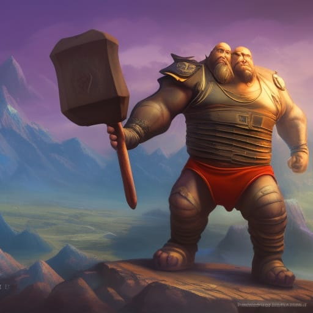
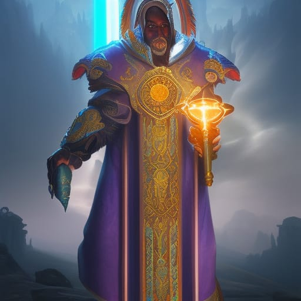
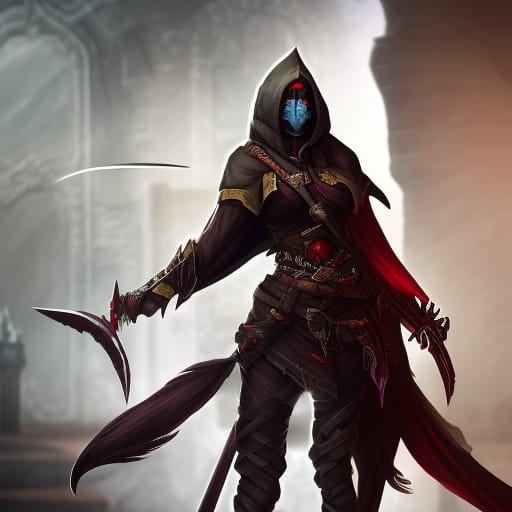
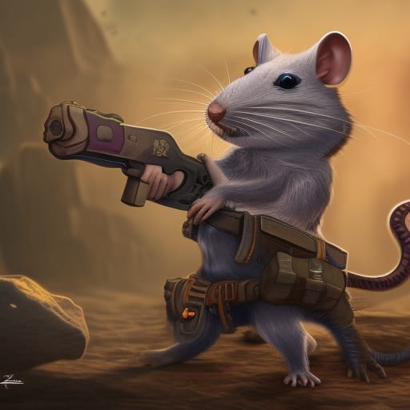

Olem

Olem is a specialist in Melee and keeping his Allies Safe. With his massive Statue he is able to swing his Huge Hammer "Mock" with abnormal Strength!
He will be the first to strike in fights to keep his Enemy focused on him at all times.
Pope

Pope is the servant of God and was sent into battle by God himself.
With his extraordinary willpower and powerful healing spells, he is
incredibly important for the whole group, especially in tight situations.
With his god-created relict "Dope"- he cleans up every situation.
Nadya

Nadya is a specialized Shadow-Shifter and fights with her beloved throwing Glaive "Blaat" and her Dagger "Suuk".
Nadya reigns in the shadows and her enemies won´t recognise her until it is too late!
She sneaks up behind her enemies to slit their throates and grab their money!
She owns a huge Villa as well!
Rattighast

Rattighast is a laboratory made species. He was made for fast paced and intense fighting.
He has 2 Tails and 4 Legs which makes his insane Speed.
He is able to flank Enemies as quick as his rifle Shoots!
His ability with his rifle"Maggie" are unmatched.
Normally he kills his Enemies before they even noticed him.